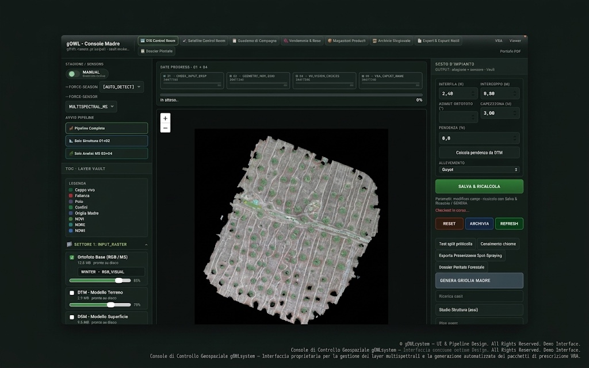
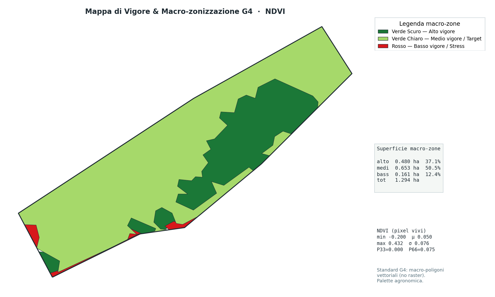

Il Rilievo
Acquisizione multispettrale UAV ad alta risoluzione (RGB e multispettrale) per una base georeferenziata affidabile.
La piattaforma integrata che trasforma i dati da telerilevamento in decisioni operative, supporto burocratico e precisione in campo.
gOWLsystem nasce per semplificare e rendere accessibile l'agricoltura di precisione, unendo analisi territoriale geospaziale e operatività quotidiana in campo. La missione è eliminare le complessità di conversione dei dati: dai rilievi aerei e satellitari a prescrizioni agronomiche chiare, standardizzate e pronte per macchinari a rateo variabile, con tracciabilità documentale e tutela peritale.
Tre passaggi sulla stessa base georeferenziata: dal rilievo alla macchina.
Acquisizione multispettrale UAV ad alta risoluzione (RGB e multispettrale) per una base georeferenziata affidabile.
Poligoni VRA continui (Verde Scuro / Verde Chiaro / Rosso) per una guida fluida e senza strappi delle macchine a rateo variabile. Fallanze fuori dal layer di dose — modulo POI dedicato.
Export ISOBUS ISO-XML TASKDATA e mappe VRA per terminali, più Scheda Operatore di Cantiere in 1 pagina.

Ambiente integrato per la gestione dei layer multispettrali (RGB, DTM, DSM, NDVI/NDRE), la segmentazione delle chiome e il calcolo dei parametri di impianto (interfila e interceppo) per la generazione automatizzata dei pacchetti di prescrizione VRA e dei report ufficiali.
Due strati convalidati dalla pipeline: Diagnostica Spettrale Integrata G5 (NDVI, GNDVI, NDRE, NDWI) e Macro-Zonazione Vettoriale Continua VRA ottimizzata per terminali ISOBUS (ISO-XML TASKDATA) — guida fluida, senza micro-pixel.


Asset da report agronomico reale (appezzamento di riferimento). Due strati distinti: diagnostica spettrale e macro-zonazione VRA per terminali ISOBUS.
Quattro ambiti componibili, attivabili in base alle esigenze aziendali.
Rilievi UAV, censimento ceppi e fallanze, report storico satellitare per il monitoraggio pluriennale.
Mappe VRA ISOBUS (TaskData) e Scheda Operatore di campo per l’esecuzione in cantiere.
Quaderno di Campagna e dossier a supporto di bandi PSR / SRH01 e conformità documentale.
Gate Peritale Ante/Post, dossier assicurativo e Consuntivo ROI di fine anno.
Demo del Viewer gOWLsystem su appezzamento di riferimento Ardilla Violeta: validazione geometrie, zone VRA e dosi prima dell’uso in campo.
Unisciti al programma di test anticipato per il Viewer gOWLsystem. Carica e verifica mappe VRA (ZIP, KMZ, KML, GeoJSON) in ambiente web prima dell’operatività.